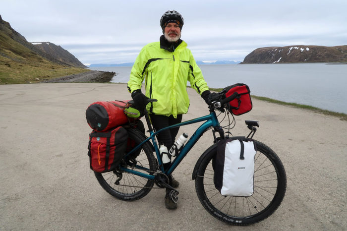
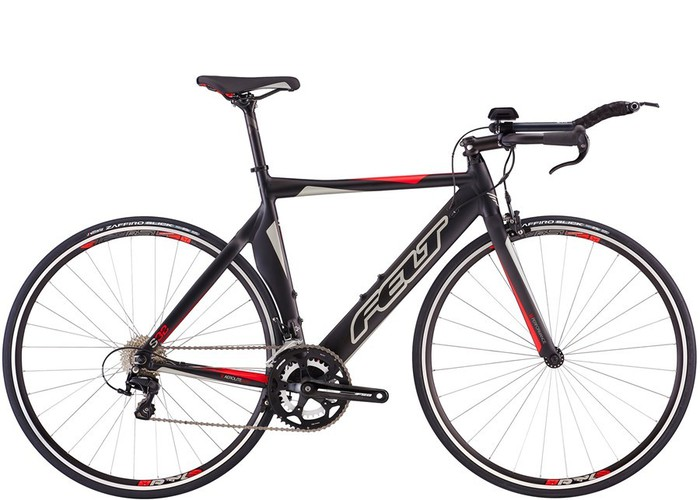
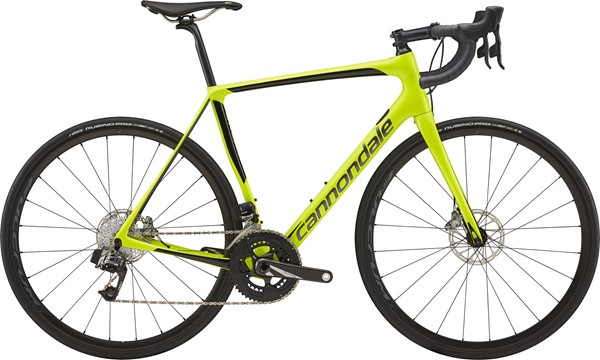
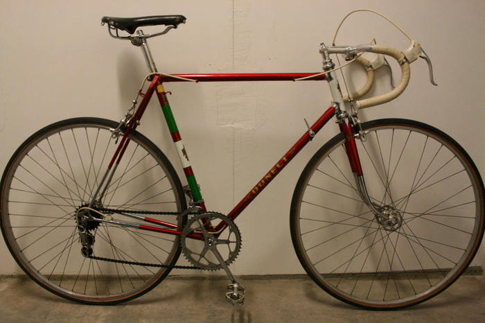

توجه
این کتاب در حال نوشته شدن است. فصل ها کاملتر خواهد شد. شما در حال دیدن آن هستید چون نیازی نیست چیزی برای دیده شدن منتظر کامل
شدن بماند. چیزها همیشه در حال تکمیل شدن هستند، در این مورد هم همینطور است با این اختلاف که عملا تازه شروع به ساخته شدن
کرده؛ ولی دلیلی ندارد همین حالا هم به درد کسی نخورد. انتظار می رود در طول یک ماه آینده، همه فصل های اصلی نوشته شوند.
توجه
این کتاب در حال نوشته شدن است. فصل ها کاملتر خواهد شد. شما در حال دیدن آن هستید چون نیازی نیست چیزی برای دیده شدن منتظر کامل
شدن بماند. چیزها همیشه در حال تکمیل شدن هستند، در این مورد هم همینطور است با این اختلاف که عملا تازه شروع به ساخته شدن
کرده؛ ولی دلیلی ندارد همین حالا هم به درد کسی نخورد. انتظار می رود در طول یک ماه آینده، همه فصل های اصلی نوشته شوند.
دوچرخهها بر اساس کارکرد، طبقه بندیهای مختلفی دارند. انواع دوچرخههای مرسومی که من و شما ممکن است بخریم را معمولا در این طبقهبندی ها جا میدهند هرچند که از نظر فنی مثلا ممنک است دوچرخه برقی طبقه بندی مستقل نباشد و یک دچرخه جاده یا تاشو بتواند برقی هم باشد یا هر دوچرخه کلاسیکی را بتوان در یکی از طبقه بندیهای مطرح شده هم جا داد.
اما به هرحال به نظرم شناختن این اصطلاحات و طبقهبندیها کمک بزرگی در انتخاب شما و شناختن دوچرخهها خواهد بود.
- تفریحی
- سایکلتوریستی
- شهری
- تخصصیها
- کوهستان
- بیامایکس
- جاده
- هیبرید
- فَت بایک
- برقی
- تاشو
- کلاسیکها
بگذارید به هرکدام نگاهی بیندزایم:
تفریحی
دوچرخههای تفریحی گروهی هستند که هدفشان گذراندن یک بعد از ظهر بامزه در پارک، رفتن به خانه نزدیک یک دوست خوب، چرخ زدنی توریستی در شهر و موارد مشابه است. این دوچرخهها گاهی حتی دنده هم ندارند و معمولا وضعیت نشستن روی آنها کاملا عمودی و مشابه نشستن روی صندلی است. این دوچرخهها مناسب مسافتهای بسیار کوتاه، بدون سربالایی و سرپایینی و بدون نیاز به سرعت هستند.
سایکل توریستی

سایکل توریسم یا به شکل خلاصه تورینگ یا تور، اشاره به دوچرخه سواری در مسافتهای بسیار طولانی دارد. از طی کردن چند روزه فاصله دو شهر گرفته تا حتی گاهی رکاب زدن چند ماهه بین قارهها! برنامههای تور معمولا نیازمند دوچرخههایی قدرتمند و پایدار هستند که همزمان با حداقل ابزار قابل تعمیر باشند. این شکل از دوچرخه سواری برای خیلی آدمها هیجان انگیز است ولی در عمل افراد کمی به تورهایی بیشتر از دو سه روزه میروند. این دوچرخهها معمولا جای پیچ کافی روی بدنه دارند تا بتوان چندین بطری آب، ترک بند جلو و عقب و تعداد قابل قبولی خورجین به آن متصل کرد. تایرهای این دوچرخه ها معمولا بر خلاف تایرهای دوچرخههای کوهستان باریکتر است تا مقاومت کمتری روی جاده ایجاد کند.
شهری

دوچرخههای شهری معمولا برای سطوح مناسبی مثل آسفالت طراحی شدهاند. لاستیکهای باریکتر از کوهستان باعث مقاومت کمتر شده و ترمزهای خوب امنیت شما را در خیابان افزایش می دهند. وضعیت نشستن روی این دوچرخهها معمولا تا حدودی عمودی است تا دید نسبت به خیابان بهتر باشد و بودن آینه کمک خوبی برای کشف وضعیت ماشینهای در حال نزدیک شدن از پشت سر است. این دوچرخهها معمولا فرمانهای صاف داشته و عرض آنها زیاد نیست تا به حرکت کردن در کنار جمعیت و حتی لابلای ماشینها کمک کند. البته در نهایت وضعیت خوب خیابانهای درون شهری این امکان را فراهم میکند تا تقریبا از هر مدل دوچرخه ای به عنوان دوچرخه شهری استفاده کرد.
تخصصیها

اما کسانی که به شکل حرفهای با دوچرخه مسابقه میدهند نیازمند دوچرخههای خاص خود هستند. این دوچرخه معمولا بسیار سبک بوده (البته حداقل وزن مجاز برای شرکت در یک مسابقه رسمی ۶۸۰۰ گرم است) و اصطکاک حداقل با جاده و شرایط ایرودینامیکی از مشخصههای اصلی هستند. تایرهای بسیار مسطح و صیقلی در عین اینکه سرعت را به حداکثر میرسانند، کنترل دوچرخه را هم سختتر میکنند و به همین خاطر این دوچرخهها برای استفاده روزمره آدمهای غیرحرفهای چندان مناسب نیستند. نوع دیگری از دوچرخههای حرفه ای مسابقه مخصوص مسابقات داخل سالن بوده و بدون داشتن دنده، برای شرایط مسابقه بهینه شدهاند.
جاده

دوچرخههای جاده معولا بدنهای ظریفتر از دوچرخههای کوهستان داشته، دندههای کافی برای بالا و پایین رفتن از شیبها را دارا میباشند. عرض لاستیک آنها نازکتر بوده و از فرمانهای دراپ (مشهور به کورسی) استفاده میکنند. در بسیاری کشورها این دوچرخهها برای رفت و آمد شهری هم استفاده میشوند اما برای استفاده در تهران احتمالا چندان مناسب نیستند. دلیل این موضوع عدم وجود خطوط کافی دوچرخه و در نتیجه نیاز به احتیاط زیاد در حین حرکت و همچنین ناهمواری نسبی بسیاری از خیابانها است.
کوهستان

دوچرخههای کوهستان که اختراعی نسبتا جدید در دنیای دوچرخه هستند معمولا به کمک فنرها، تایرهای پهنتر و بدنههای مقاومتر شناخته میشوند. این دوچرخهها با دارا بودن گستره نسبتا زیاد دنده، امکان بالا رفتن از شیبهای تند و پایین آمدن های سریع را فراهم میکنند. فرمانهای صاف کنترل بیشتری به دوچرخه سوار میدهند و در مدلهایی که معمولا مخصوص سراشیبیهای تند ساخته شده اند، بودن کمک فنر عقب میتواند کمک بزرگی باشد. این روزها در ایران خیلیها برای استفادههای شهری، به سراغ دوچرخههای کوهستان میروند.
بی ام ایکس
این دوچرخهها مخصوص حرکات نمایشی ساخته شدهاند و وضعیت خاص زین، اندازه کوچک، نبودن دنده و جاهایی برای قرار دادن پا در حین حرکات نمایشی، مشخصههای اصلی آنها است. اگردنبال انجام حرکاتی شبیه فیلم زیر نیستید، این دوچرخهها برای شما نیستند.
هیبرید

فرزند باحال و پر کاربرد دوچرخه کوهستان و دوچرخههای شهری، چیزی هستند با مشخصههای خوب هر دو بدون سنگینی و تایرهای پهن دوچرخههای کوهستان اما با توان استفاده شدن جدی برای رفت و آمد و دندههای کافی برای سربالایی ها و سر پایینی ها. این دوچرخه ها معمولا فرمانهایی کمی بالاتر دارند تا بتوانند موقعیت نشستن عمودی تری ارائه دهند اما تایرهای نازکتر برای آسفالت بهینه شده اند. این دچرخههای گزینههایی بسیار مناسب برای رفت و آمدهای حدود ۱۰ کیلومتری شهری به قصد رفت و آمد و ورزش و تفریح و شادی هستند.
فَت بایک

فت باید یا همان دوچرخههای چاق، نسبتا تازه واردهای دنیای دوچرخه هستند. مشخصه اصلی آنها، چرخهای بسیار عریضی است که به آنها اجازه میدهد در مکانهایی که معمولا دوچرخههای دیگر در آن حرکت نمیکنند، گام بگذارند. منطقا باید در ساحلهای شنی و برف دنبال این دوچرخهها باشید هرچند که اصلا بعید نیست ظاهر قشنگشان باعث شود در شهر هم آنها را مشاهده کنید. در کشورهای برفی فت بایکها یکی از انتخابهای کسانی هستند که میخواهند در هر شرایط آب و هوایی سوار دوچرخهشان باشند.
برقی
این روزها دوچرخههای برقی هم طرفداران خودشان را پیدا کردهاند. این دوچرخهها با داشتن موتورهایی معمولا برقی، میتوانند در رکاب زدن به شما کمک کنند. بر خلاف موتورهای برقی این دوچرخهها هنوز نیاز به رکاب زدن دارند اما آمادهاند که در صورت درخواست شما، اینکار را برای شما راحتتر کنند. شخصا هیچ وقت سوار چنین دوچرخهای نشدهام و نمیتوانم نظر خیلی دقیق بدهم ولی میدانم که افراد مسنتر یا کسانی که میخواهند همیشه بدون عرق کردن و نفس نفس زدن به انتهای مسیر برسند و همینطور کسانی که مسیرشان سربالایی بسیار طولانی دارد، از این دوچرخهها کمک میگیرند. نکته منفی این دوچرخهها نیاز به شارژ دائم و از آنطرف وزن سنگیتر است که بلند کردن این دوچرخهها به منظور رد کردن از موانع یا رسیدن به طبقات بالای خانه را سختتر میکند.
تاشو

فرض کنید دوچرخه شما نه فقط از وسط که حتی از ارتفاع هم تا میشد و به اندازه یک چمدان درمیآمد! چنین دوچرخهای را میتوانید به خوبی در خانه جا دهید، آن را با آسانسور به طبقه دوازدهم شرکت برسانید یا حتی وقتی در یک سر مسیر با کسی هستید یا وقتی در برگشت حوصله رکاب زدن ندارید، آن را در صندوق عقب ماشین بگذارید. این دوچرخهها معمولا چرخ کوچکتری دارند اما با داشتن طبقه قامه بزرگ، این مشکل را حل میکنند. این دوچرخهها معمولا با دندههای کمتر، برای محیطهای شهری مناسب هستند اما چرخ کوچک آنها رد شدن از موانع را نیازمند کمی احتیاط میکند. اما حتی در تهران هم چنین دوچرخههایی گزینههای مناسب برای افرادی هستند که گاه گداری لازم است فقط یک سر مسیر را با دوچرخه برند.
کلاسیک

دوچرخههای کلاسیک نه فقط در انباریها و دست دوم فروشی ها پیدا میشوند، که خیلیها با تعمیر یک دوچرخه که از دیوار یا شیپور ۱۰۰ تومن خریدهاند، آن را به طرفداران چیزهای کلاسیک یا نوستالژیبازان یا هیپسترها به قیمت چند میلیون تومان میفروشند! در قدیم دوچرخههای پژو در ایران بسیار مشهور بودند ولی مدلهای دیگر هم کمیاب نیستند. چنین دوچرخهای شاید برای یک هیپستر مناسب باشد اما در نهایت تبدیل کردن آن به یک دوچرخه واقعا قابل سوار شدن با استانداردهای امروز نیاز به تلاشی بسیار زیاد دارد. ترمزهای جدید امنتر هستند، دندهها کاراتر هستند و تایرها بهتر اما هیچ کدام از اینها را نمیتوانید مستقیما روی یک بدنه قدیمی ببندید. اگر دوچرخه قدیمی دوست دارید پیشنهاد من خرید یک دست دوم بسیار ارزان و تعمیر با حوصله و آرام آن است. بخصوص اگر دوچرخه مربوط به بعد از ۱۹۷۰ باشد، با کمی حوصله میتوانید آن را به یک ابزار قابل استفاده روزمره تبدیل کنید که به نظر من زیباتر از هر دوچرخه جدیدی خواهد بود. اما لطفا حسابی مطمئن شوید که ترمزها به خوبی کار میکنند!